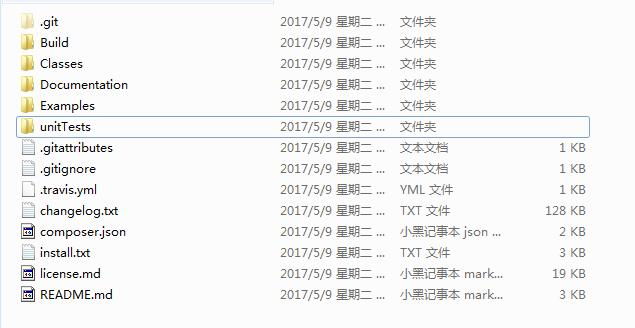
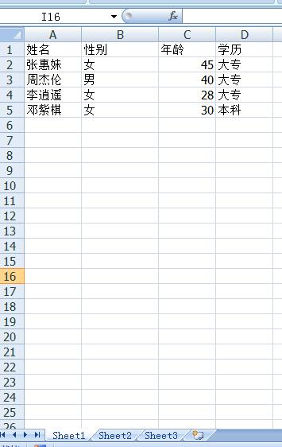
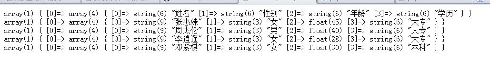

利用PHPExcel读取Excel的数据和导出数据到Excel
PHPExcel是一个PHP类库，用来帮助我们简单、高效实现从Excel读取Excel的数据和导出数据到Excel。也是我们日常开发中，经常会遇到的使用场景。比如有个客户信息表，要批量导出发给同事，我们就可以用PHPExcel来快速实现。同样，如果我们要利用短信群发接口去群发信息，PHPExcel可以快速导入客户信息，避免人工录入信息的麻烦。
PHPExcel使用教程：
首先下载PHPExcel
到https://github.com/PHPOffice/PHPExcel下载PHPExcel，如果不懂得使用git，可以到这https://codeload.github.com/PHPOffice/PHPExcel/zip/1.8下载压缩包，懂得的自行用git下载。
下载好文件，解压可以得到如下文件：
PHPExcel
好了，现在我们就可以用PHPExcel愉快的读取和制作表格了！
PHPExcel DEMO1：利用PHPExcel读取excel信息：
我们在根目录创建一个名为read.php的文件来读取文档，创建一个test.xlsx的文件，里面写的信息如下：

然后在read.php写以下代码：
<?php
include ‘./Classes/PHPExcel/IOFactory.php’;$inputFileName = ‘./test.xls’;
date_default_timezone_set(‘PRC’);
// 读取excel文件
try {
$inputFileType = PHPExcel_IOFactory::identify($inputFileName);
$objReader = PHPExcel_IOFactory::createReader($inputFileType);
$objPHPExcel = $objReader->load($inputFileName);
} catch(Exception $e) {
die(‘加载文件发生错误：”‘.pathinfo($inputFileName,PATHINFO_BASENAME).'”: ‘.$e->getMessage());
}// 确定要读取的sheet，什么是sheet，看excel的右下角，真的不懂去百度吧
$sheet = $objPHPExcel->getSheet(0);
$highestRow = $sheet->getHighestRow();
$highestColumn = $sheet->getHighestColumn();// 获取一行的数据
for ($row = 1; $row <= $highestRow; $row++){
// Read a row of data into an array
$rowData = $sheet->rangeToArray(‘A’ . $row . ‘:’ . $highestColumn . $row, NULL, TRUE, FALSE);
//这里得到的rowData都是一行的数据，得到数据后自行处理，我们这里只打出来看看效果
var_dump($rowData);
echo “<br>”;}
得到的数据：
PHPexcel读取文件
PHPExcel DEMO2：利用PHPExcel导出信息到excel：
<?php
/** Error reporting */
error_reporting(E_ALL);
ini_set('display_errors', TRUE);
ini_set('display_startup_errors', TRUE);
date_default_timezone_set('PRC');
/** 引入PHPExcel */
require_once dirname(__FILE__) . './Classes/PHPExcel.php';
// 创建Excel文件对象
$objPHPExcel = new PHPExcel();
// 设置文档信息，这个文档信息windows系统可以右键文件属性查看
$objPHPExcel->getProperties()->setCreator("作者简庆旺")
->setLastModifiedBy("最后更改者")
->setTitle("文档标题")
->setSubject("文档主题")
->setDescription("文档的描述信息")
->setKeywords("设置文档关键词")
->setCategory("设置文档的分类");
//根据excel坐标，添加数据
$objPHPExcel->setActiveSheetIndex(0)
->setCellValue('A1', '你好')
->setCellValue('B2', '世界')
->setCellValue('C1', '你好')
->setCellValue('D2', '世界');
// 混杂各种符号, 编码为UTF-8
$objPHPExcel->setActiveSheetIndex(0)
->setCellValue('A4', 'Miscellaneous glyphs')
->setCellValue('A5', 'éàèùâêîôûëïüÿäöüç');
$objPHPExcel->getActiveSheet()->setCellValue('A8',"你好世界");
$objPHPExcel->getActiveSheet()->getRowDimension(8)->setRowHeight(-1);
$objPHPExcel->getActiveSheet()->getStyle('A8')->getAlignment()->setWrapText(true);
$value = "-ValueA\n-Value B\n-Value C";
$objPHPExcel->getActiveSheet()->setCellValue('A10', $value);
$objPHPExcel->getActiveSheet()->getRowDimension(10)->setRowHeight(-1);
$objPHPExcel->getActiveSheet()->getStyle('A10')->getAlignment()->setWrapText(true);
$objPHPExcel->getActiveSheet()->getStyle('A10')->setQuotePrefix(true);
// 重命名工作sheet
$objPHPExcel->getActiveSheet()->setTitle('第一个sheet');
// 设置第一个sheet为工作的sheet
$objPHPExcel->setActiveSheetIndex(0);
// 保存Excel 2007格式文件，保存路径为当前路径，名字为export.xlsx
$objWriter = PHPExcel_IOFactory::createWriter($objPHPExcel, 'Excel2007');
$objWriter->save( 'export.xlsx');
// 保存Excel 95格式文件，，保存路径为当前路径，
$objWriter = PHPExcel_IOFactory::createWriter($objPHPExcel, 'Excel5');
$objWriter->save('export.xls');
好了，执行后我们可以得到export.xls和export.xlsx，如果使用过程遇到问题，可以联系本博客答疑。